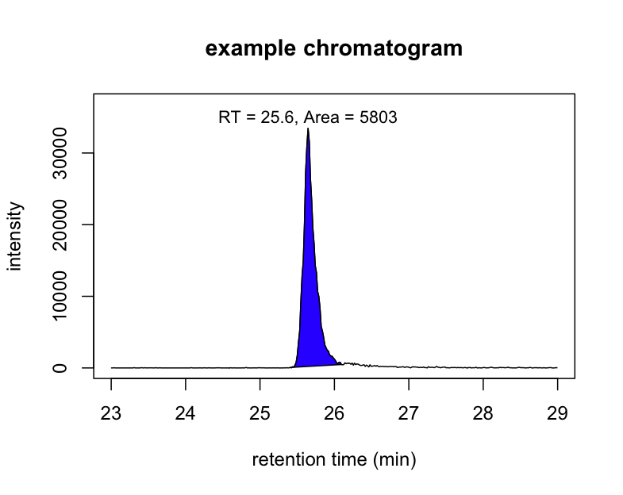
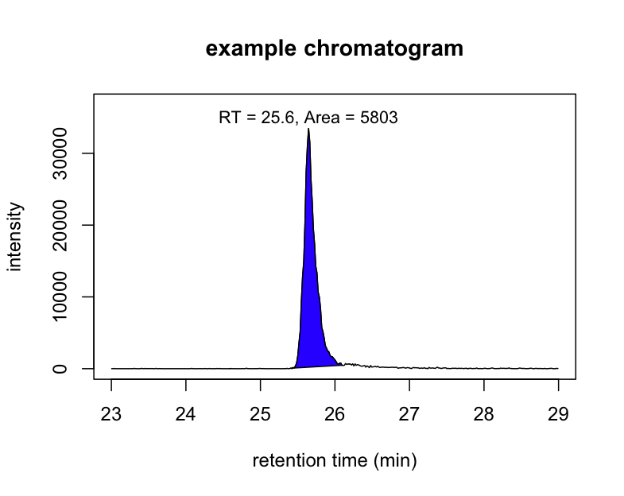

OrgMassSpecR (Organic Mass Spectrometry with R) is a package for organic/biological mass spectrometry, with a focus on the graphical display of mass spectra and related data, small molecule and protein quantification using stable isotope dilution, and protein hydrogen/deuterium exchange experiments.
This project is currently in the planning stage.
Within a few weeks, the current version should be on the R-Forge OrgMassSpecR project summary/download page.
Make head-to-tail plots of of mass spectra. Plot chromatograms and color the peaks.
 

Predict the peptides resulting from an enzymatic cleavage of a protein by trypsin or pepsin. Calculate the b/y or c/z fragment ion m/z values of a stable isotope labeled peptide. Plot annotoated peptide fragmentation mass spectra produced by collision induced dissociation (CID) or electron transfer dissociation (ETD).

Simulate the isotopic distribution of labeled or unlabeled organic molecules, of peptides from nitrogen-15 labeled proteins, and peptides undergoing hydrogen/deuterium exchange.